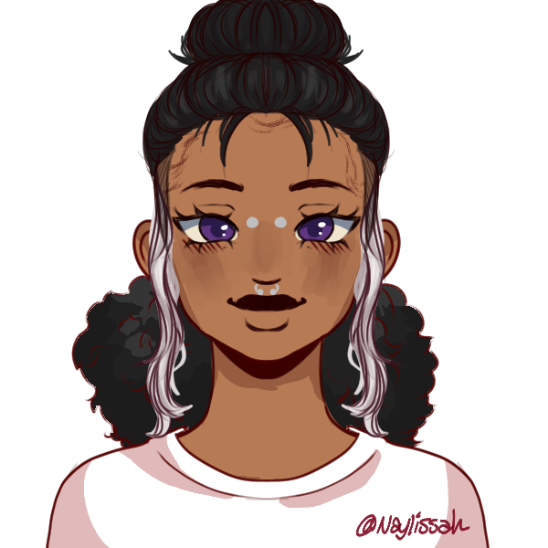

De Onde Vem Socorro

Eu não conseguia pensar em muita coisa naquele momento sendo sincero, lembro de ficar muito tempo olhando pra cima e esperando ajuda de algum lugar, mas no final o socorro vem da gente, não é mesmo?
Quando eu finalmente olhei pro lado e vi a Agatha ali… eu dei de tudo pra levantar. Eu só tinha ela em mente. Ela foi a pessoa que salvou a gente dos bullies várias vezes, sabia? Na cabeça de todo mundo eu era só uma sapatão esquisita, mas ela me via como mais do que isso. Passei muito tempo ajudando ela com a vida, mas não fui capaz de ajudar ela dessa vez. Ela já estava morta.
Entretanto, haviam outras pessoas ali também, eu só fui sair do colégio desabado após ser arrastastade pelos enfermeiros, acredita? Passei horas procurando e ajudando sobreviventes ao longo do local, eu devia isso à quem não teve aquela chance.
Céu utiliza todos pronomes, costuma ser vista como uma pessoa dedicada e muito gentil.
Céu tem uma tendência de se cobrar demais ajudando as pessoas ao seu redor e muitas vezes esquecendo das próprias necessidades.
Sol e Céu tem uma certa antipatia por discordarem profundamente da forma a qual deveriam agir em relação às pessoas de fora. Porém, Céu é neutra em relação ao Mar e nutre um sentimento de admiração quanto à Lua.